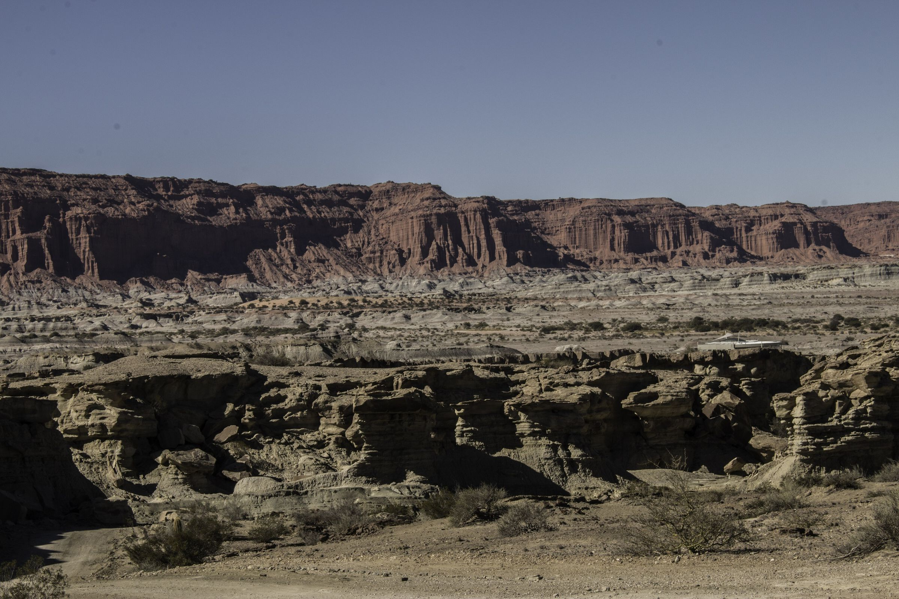
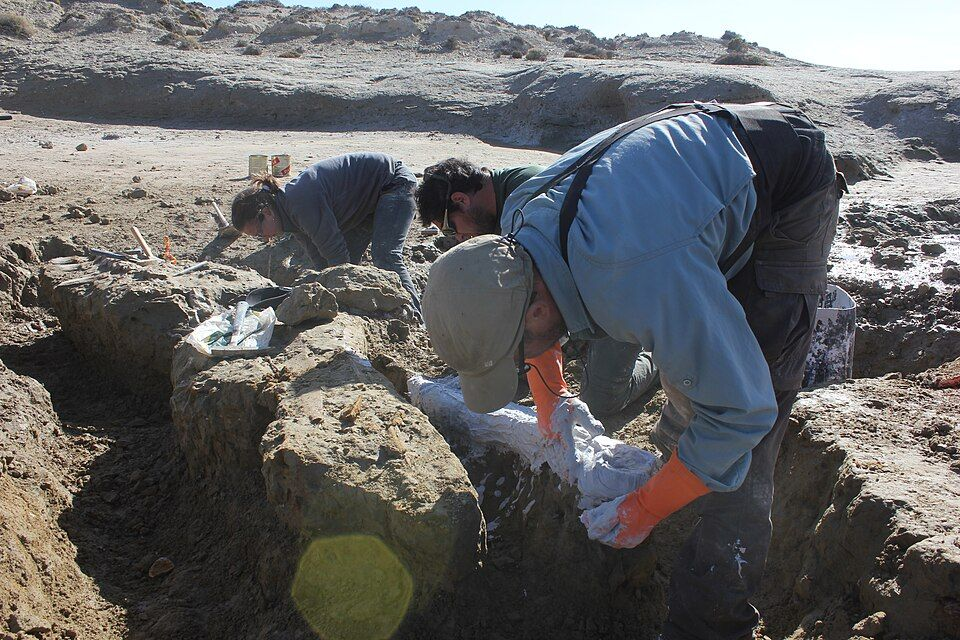
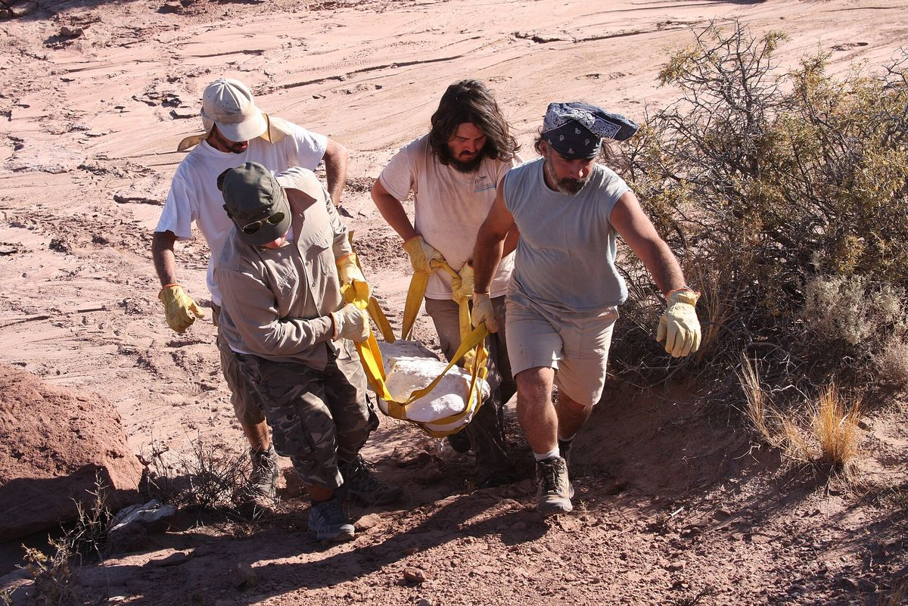
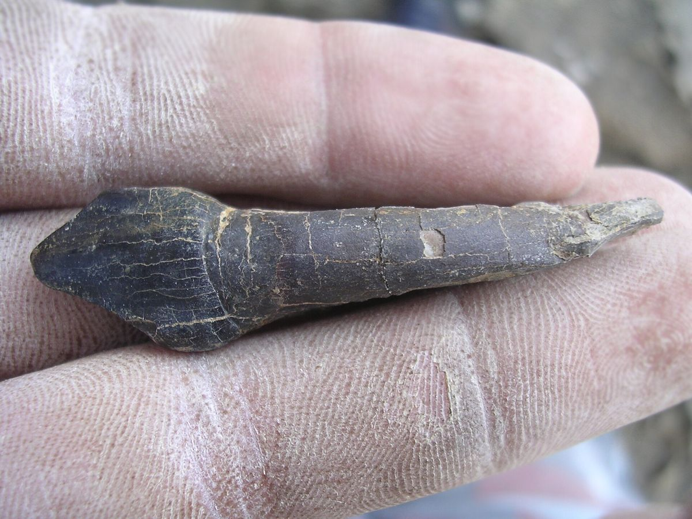

Estudiá Paleontología
Para develar el pasado de la vida en la larga historia de la Tierra hay que conocer sobre biología y también sobre geología. La Licenciatura en Paleontología de Exactas UBA integra las dos.
Valle de la Luna, Ischigualasto. Foto: Paulakindsvater, CC BY-SA 4.0

La Paleontología da entrada al mundo de los restos fósiles: los primeros organismos unicelulares, los metazoos, los grandes dinosaurios, las plantas y las estructuras geológicas que cuentan sobre el ambiente en el que vivió cada organismo.


¿Qué hace un/apaleontólogo/a?
La paleontología es una ciencia que integra aspectos de índole geológica y biológica. Quienes egresan de la carrera estudian la historia de la vida sobre la Tierra a partir del registro fósil: desde debates actuales de biología evolutiva, sistemática y paleobiología hasta los procesos geológicos que actuaban cuando el fósil era aún un organismo vivo y las posibles causas de eventos mayores como las extinciones masivas.
La formación es interdisciplinaria y permite desempeñarse en investigación, en la industria del petróleo, en museos, en la protección del patrimonio paleontológico y en la divulgación científica.
Leer más

¿Por qué estudiarpaleontología?
Campo laboral
Los egresados y las egresadas se pueden dedicar a la investigación dentro de la Facultad y en institutos de investigación de todo el país. El título tiene validez nacional y, en el marco de la Ley 25.743 de Protección del Patrimonio Arqueológico y Paleontológico, habilita para:
- Asesorar a los organismos encargados de la preservación y tutela del patrimonio paleontológico.
- Integrar las autoridades de aplicación y los registros oficiales de yacimientos, colecciones y restos paleontológicos.
- Determinar fósiles con fines bioestratigráficos, con amplia aplicación en la industria petrolera.
- Actuar como perito judicial en la determinación, valoración y origen de fósiles.
- Trabajar en museos, en extensión científica y en medios de comunicación.
Un abanico deespecialidades
Paleontología de Vertebrados
Peces, anfibios, reptiles, dinosaurios, aves y mamíferos del pasado.
Paleontología de Invertebrados
Trilobites, amonites, braquiópodos y otros grupos que dominaron los mares antiguos.
Paleobotánica y Palinología
Plantas fósiles, polen y esporas para reconstruir la vegetación y el clima del pasado.
Micropaleontología y Bioestratigrafía
Microfósiles para datar las rocas y reconstruir ambientes, clave en la industria del petróleo.
Paleoecología y Tafonomía
Cómo vivían los organismos, cómo se fosilizaron y qué nos cuentan sobre el ambiente.
Un ámbito naturalpara la paleontología
Exactas UBA, con sus departamentos de Ciencias Geológicas, Ciencias Biológicas y Ciencias de la Atmósfera y los Océanos, cuenta con un importante caudal de recursos humanos en todos los niveles de la carrera docente.
En el área de Paleontología del Departamento de Ciencias Geológicas se atesoran numerosas colecciones de fósiles, muchas de ellas con fines didácticos, una amplia y actualizada biblioteca especializada y equipamiento de campo y laboratorio. Esto permite enseñar la paleontología con su enfoque clásico y, a la vez, con un uso creciente de la tecnología en proyectos de laboratorio.


¿Tenés dudas sobre la cursada? Escribinos.